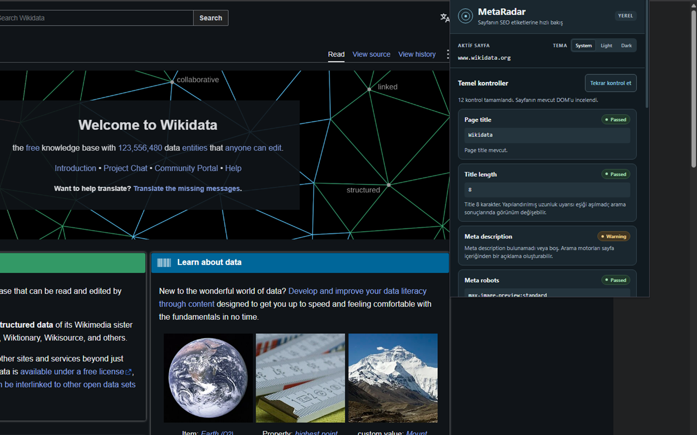
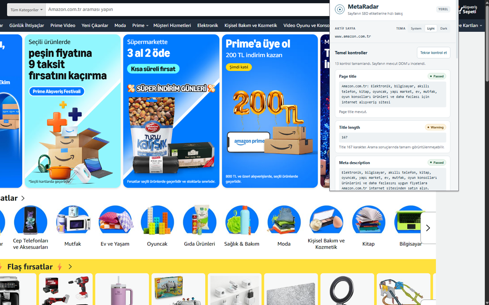
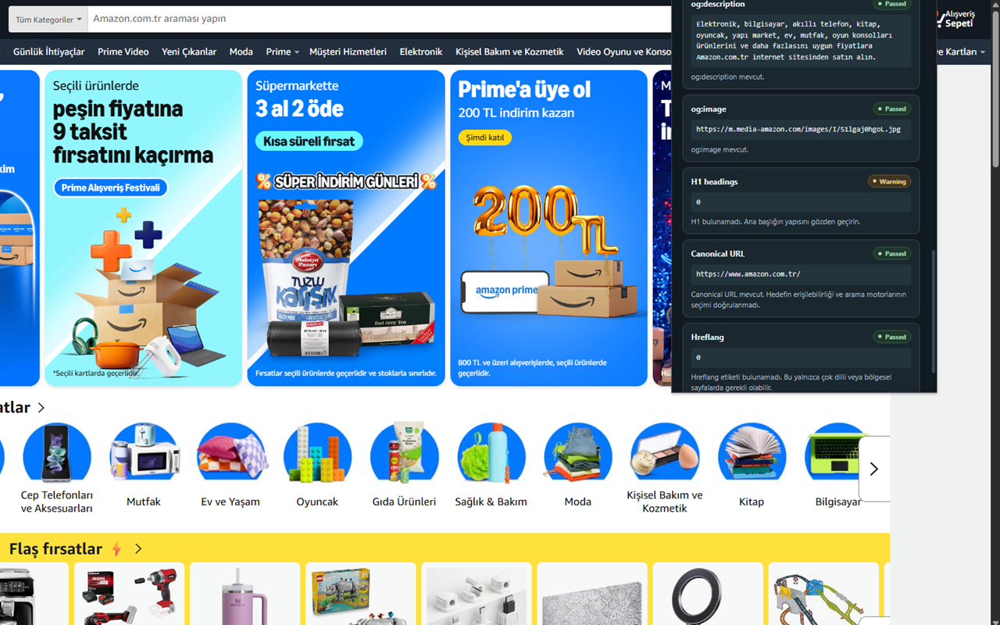

Page essentials
Page title, meta description and H1.
Inspect essential on-page SEO metadata directly in your browser.
Privacy-first, local Chrome extension.
No backend. No tracking. No external API.
Version 1.0.0 · Manifest V3
The essentials, in one popup.
Page title, meta description and H1.
Canonical links and meta robots directives.
HTML lang and missing image alt attributes.
Open Graph metadata and hreflang links.
Passed, Warning and Error labels with explanations.
System, Light and Dark appearance.
Your page data stays on your device.
Page checks run in your browser.
No analytics or telemetry.
No accounts or server uploads.
No requests to third-party services.
Page data and results are never persisted. Only themePreference is saved locally.
A direct path from page to results.
Packaged HTML, CSS and JavaScript. No framework or dependencies. The page stays unchanged.
A closer look at MetaRadar in Chrome.



Three permissions for a focused tool.
activeTabscriptingstoragechrome://extensions.Chrome Web Store publication is under consideration.